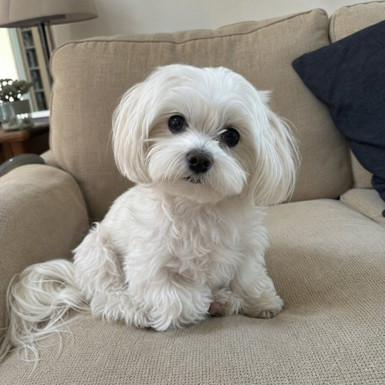
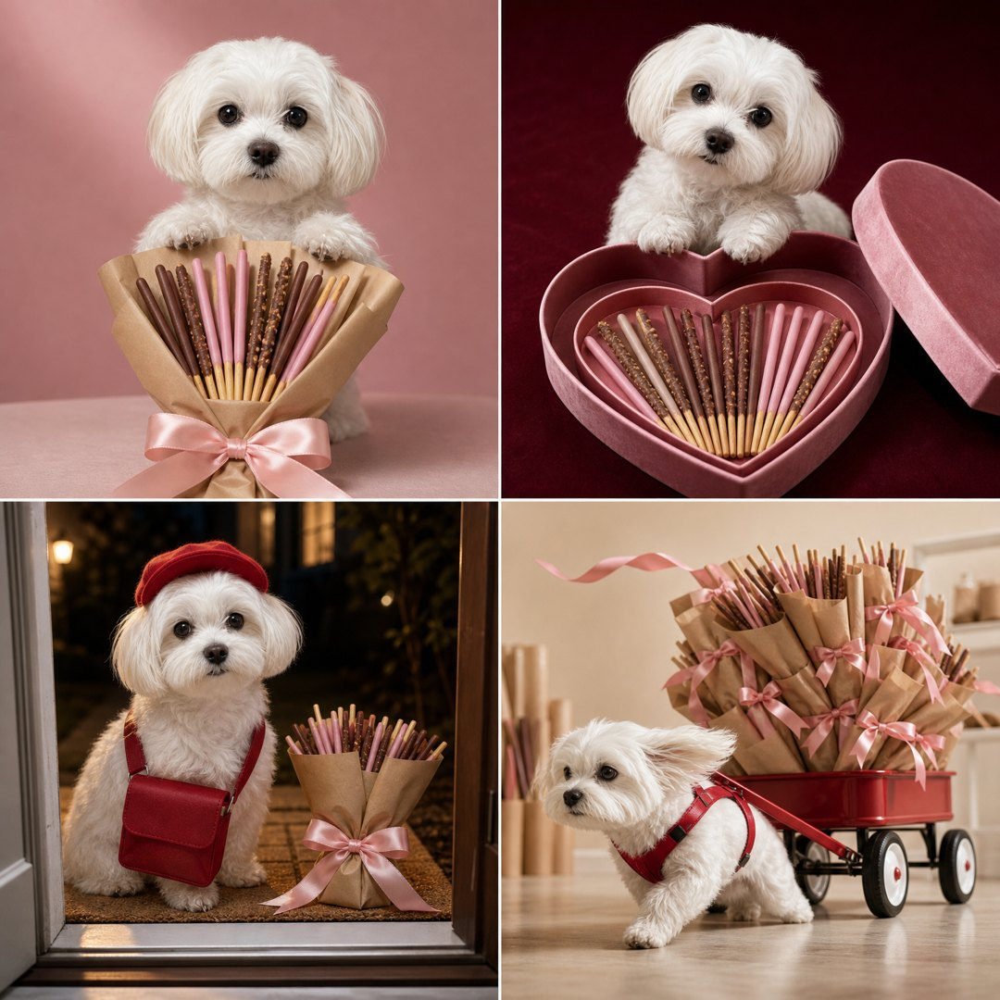
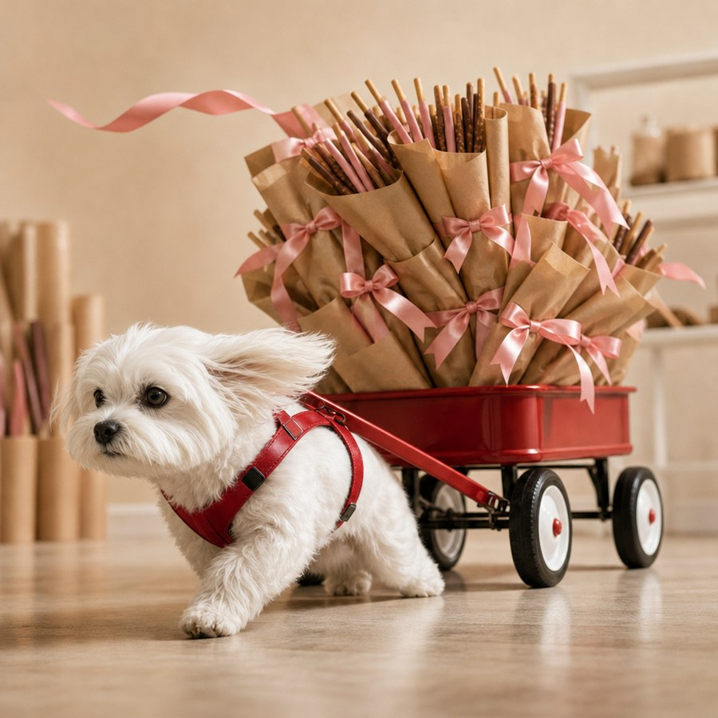

사진 한 장으로
빼빼로데이 펫 화보 4컷
우리 아이 사진 한 장과 아래 프롬프트 하나면 네 가지 장면이 한 번에 나와요. 마음에 드는 칸을 골라 가져가세요.
👀 이렇게 바뀌어요


예시 사진과 결과는 AI로 만든 가상 반려동물이에요. 위 결과는 OpenAI 이미지 API(gpt-image-2)로 만들었고, ChatGPT 웹 일반 채팅에서도 같은 프롬프트로 4컷이 나오는 걸 시험했어요. 내 결과는 조금씩 다르게 나올 수 있어요.
- 1번 왼쪽 위 - 꽃다발 내밀기
- 2번 오른쪽 위 - 하트 선물함
- 3번 왼쪽 아래 - 현관 도착
- 4번 오른쪽 아래 - 선물 수레 끌기
📱 쓰는 법
- ChatGPT나 제미나이를 열고 우리 아이 사진 한 장을 올려요. 얼굴이 잘 보이는 밝은 사진이 좋아요.
- 아래 4컷 프롬프트를 복사해서 같이 보내요.
- 마음에 드는 칸은 휴대폰 사진 편집의 자르기로 저장하거나, 아래 고르기 문장으로 한 장 크게 다시 받아요.
ChatGPT는 일반 채팅에서 해주세요. 우리 시험에서는 임시 채팅에서 이미지가 만들어지지 않았고, 일반 채팅에서는 만들어졌어요. AI마다 이용 조건과 이미지 생성 횟수 제한이 다를 수 있어요.
📋 4컷 프롬프트
프롬프트와 예시 파일 받기 - 4컷 프롬프트 - 고르기 문장 - 예시 사진: 원본 - 4컷 - 크게 받기


첨부한 반려동물 사진을 바탕으로, 11월 11일 소중한 사람에게 마음을 전하는 선물 화보를 만들어줘. 완성 결과는 같은 크기의 정사각형 사진 네 장을 정사각형 한 장에 2x2로 배치한 이미지야. 칸 사이에는 아주 얇고 균일한 흰 선만 넣어줘. 이미지 안에는 칸 번호나 제목을 넣지 마. 네 칸 모두 첨부 사진 속 바로 그 아이 한 마리야. 얼굴 비율, 눈매, 코, 귀 모양, 털색과 무늬, 원래 털 길이와 체형을 유지해줘. 임의로 새끼처럼 바꾸거나 다른 품종으로 바꾸지 마. 앞발은 원래 동물의 발 모양이고 사람 손가락처럼 만들지 마. 얼굴과 귀의 특징이 소품에 가려지지 않게 해줘. 전체는 실제 카메라로 촬영한 고급 반려동물 잡지 화보처럼 만들어줘. 자연스러운 털, 눈의 작은 반사광, 천과 종이의 질감, 바닥에 닿는 그림자가 선명해야 해. 네 칸의 색감과 촬영 각도는 확실히 다르게 하고, 네 칸 중 적어도 한 칸은 움직임이 느껴지는 역동적인 순간으로 하고, 장식보다 우리 아이의 얼굴과 행동이 먼저 보이게 해줘. 선물에 사용하는 과자는 상표 없는 초콜릿 코팅 비스킷 스틱이야. 실제 한입 과자 굵기의 가늘고 곧은 원통형 막대로, 손잡이 쪽 약 4분의 1은 구운 황금빛 비스킷이 드러나고 나머지는 얇은 코팅으로 덮여 있어. 밀크초콜릿색, 연한 딸기우유색, 작은 아몬드 조각이 붙은 초콜릿색을 섞어줘. 길이와 굵기는 일정하고 과장된 거대 소품처럼 보이지 않게 해줘. 코팅 표면은 은은한 광택이며, 아몬드 조각은 작고 촘촘해. 각 막대가 서로 구분되도록 간격을 두고 정돈해줘. 왼쪽 위 장면. 부드러운 장밋빛 스튜디오에서 우리 아이가 낮은 탁자 뒤에 앉아, 탁자에 안정적으로 놓인 풍성한 과자 부케의 포장 부분에 두 앞발을 얹고 카메라 쪽으로 살짝 밀어주는 순간이야. 크라프트지와 넓은 연분홍 새틴 리본으로 감싼 부케이며, 과자는 길이가 일정하고 위쪽으로 단정하게 펼쳐져 있어. 부케는 얼굴 아래에 놓여 눈과 귀를 가리지 않아. 얼굴과 두 앞발, 리본 매듭이 함께 보이는 눈높이 사진으로, 수줍게 선물을 건네는 분위기를 만들어줘. 생과일과 통견과류는 넣지 마. 오른쪽 위 장면. 짙은 버건디 배경과 부드러운 측면 조명 아래, 열린 분홍 벨벳 하트 선물함을 비스듬히 위에서 내려다보는 사진이야. 선물함 앞쪽의 얕은 하트 모양 트레이에는 과자들이 눕혀진 상태로 방향을 맞춰 부채꼴로 정돈돼 있어. 우리 아이는 상자 바깥 뒤쪽에 앉아서 뒤쪽의 과자 없는 넓은 테두리에 앞발을 얹고 고개를 살짝 기울여 카메라를 올려다봐. 얼굴과 과자 사이에는 충분한 공간이 있어. 하트 윤곽 전체가 보이고, 과자와 반려동물이 분리돼 있다는 구조가 분명하게 보여야 해. 보석 선물 광고처럼 차분하고 고급스럽게 만들어줘. 왼쪽 아래 장면. 저녁에 집 안에서 열린 현관문 밖을 바라보는 시점이야. 따뜻한 현관등 아래 우리 아이가 문턱 바깥의 매트에 앉아 카메라를 올려다보고 있어. 귀가 잘 보이도록 작은 빨간 배달원 모자를 쓰고, 몸에 맞는 작은 빨간 무지 천가방을 메고 있어. 발 앞에는 크라프트지와 분홍 리본으로 포장한 과자 부케 하나가 안정적으로 놓여 있어. 문틀 일부를 전경에 넣어서 문을 열었더니 우리 아이가 선물을 가져온 순간처럼 보여줘. 얼굴, 가방, 선물이 모두 알아볼 수 있게 담아줘. 오른쪽 아래 장면. 밝은 크림색 포장 작업실에서, 정성스럽게 포장한 과자 부케들이 우리 아이 키보다 두 배 높게 산더미처럼 실린 작은 빨간 수레를, 우리 아이가 몸에 맞는 작은 하네스로 연결해 힘껏 끌고 가는 순간이야. 한쪽 앞발을 크게 내딛고 몸을 앞으로 숙인 결연한 표정, 귀와 털이 뒤로 살짝 날려. 수레 위 부케 더미는 살짝 기울어 아슬아슬하고, 리본 하나가 공중에 휘날려. 수레 바퀴와 바닥 그림자가 분명하고, 낮은 각도에서 영화 장면처럼 역동적으로 찍어줘. 웃기지만 아이가 위험해 보이지는 않게. 포장은 직접 만든 선물 포장으로 통일해줘. 크라프트지, 단색 리본, 아무것도 인쇄되지 않은 천과 벨벳만 사용해줘. 과자는 부케와 전용 트레이 안에만 정돈해줘. 반려동물이 과자를 먹거나 물거나 핥지 않으며 과자가 코나 입에 닿지 않게 해줘. 네 칸 모두 추가 동물이나 사람 없이 첨부한 아이 한 마리만 등장해. 다리나 발이 늘어나거나 소품과 합쳐지지 않게 해줘. 모든 표면은 인쇄 없는 깨끗한 무지 상태이며, 글자, 숫자, 상표, 로고, 라벨, 워터마크, 읽을 수 없는 가짜 문자도 넣지 마.
🔍 고르기 문장
[번호], [위치], [장면]만 바꿔요. 예: 4번, 오른쪽 아래 선물 수레
방금 만든 4컷 중 [번호]번, [위치] [장면] 장면만 정사각형 한 장으로 크게 보여줘. 선택한 칸의 얼굴, 표정, 자세, 카메라 각도, 배경, 소품 배치를 그대로 유지해줘. 원본에서 해당 칸을 추출하는 방식이 가능하면 먼저 사용하고, 새로 생성해야 한다면 장면을 재해석하지 말고 원본 칸을 기준으로 최대한 충실하게 재현해줘. 다른 칸과 흰 구분선은 제외해줘.

4번을 크게 다시 받은 예시예요. 새로 그리는 거라 원래 칸과 똑같지는 않을 수 있어요. 똑같이 갖고 싶으면 자르기를 쓰세요.
🧯 잘 안 될 때
- 그림에 글자나 상표가 보이면 이렇게 보내요.
이 이미지의 포장지와 가방에 있는 모든 문자와 로고를 제거하고, 해당 부분을 주변과 같은 색과 질감의 무지 표면으로 바꿔줘. 반려동물과 장면 구성은 유지해줘.
- 다른 아이처럼 나오면 얼굴이 더 크게 나온 사진으로 다시 해봐요.
🐾 꼭 알아두세요
- 초콜릿 과자는 강아지와 고양이에게 위험해요. 사진 속에서만 주고, 실제로는 주지 마세요.
- 사진은 내가 고른 AI 회사로 전송돼요. 다른 사람이 나온 사진은 쓰지 마세요.